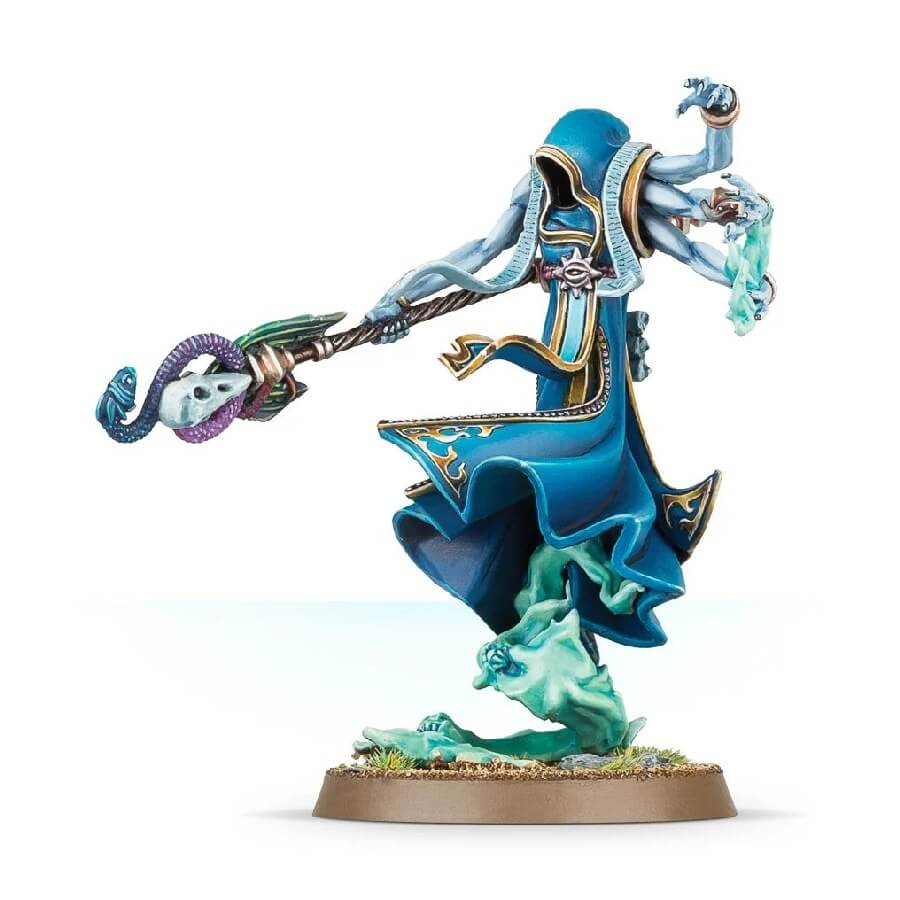
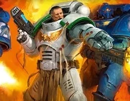
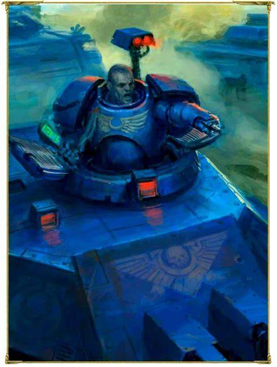
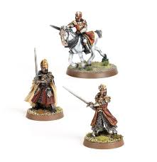

Shortlist
- The Changeling — Warhammer 40k & Warhammer Fantasy
- Vitrian Messinius — Warhammer 40k
- Sergeant Chronus — Warhammer 40k
The Changeling

The Changeling is an Daemonic Herald of the Chaos god Tzeentch from the war game Warhammer. I particularly like the Changeling because of the antics it gets up to in the many books and novels it is included in. some of these schemes include:
- The time he snuck a trio of Nurglings onto the Skull Throne, creating a hideous noise and an unholy mess the next time the Chaos god Khorne sat down.
- In the guise of a lowly Gretchin, the Changeling made a few alterations to Warboss Gitsmasha's favoured Megashoota -- a fact that only became apparent when it next fired, blowing Gitsmasha and his retinue of Nobz to tiny green pieces.
Source: https://warhammer40k.fandom.com/wiki/Changeling
Vitrian Messinius

Vitrian Messinius is the current Warden of the Nephilim sector and was given said role to protect what the Primarch Roboute Guilleman had previously reconquered during the many crusades after Guilleman's return. He also holds the position of Captain in his home Chapter, the White Consuls.
Source: https://task-force-xv.fandom.com/wiki/Captain_Vitrian_Messinius
Sergeant Chronus

Chronus is a Tank commander of the Ultramarines Chapter and currently holds the title of "Spear of Macragge", and currently answers only and directly to the Primarch Roboute Guilleman and the Chapter Master Marneus Calgar.
Source: https://warhammer40k.fandom.com/wiki/Antaro_Chronus
Isildur

Isildur is the eldest son of Elendil and the Former King of Gondor, he was the one who struck down Sauron, but at the same time refused to destroy the One Ring and eventually its will betrayed him leading to his death.
Source: https://lotr.fandom.com/wiki/Isildur